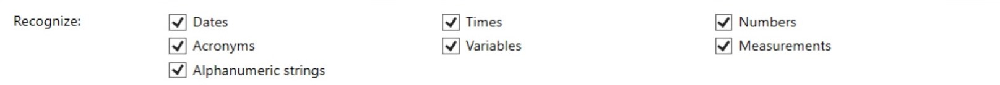
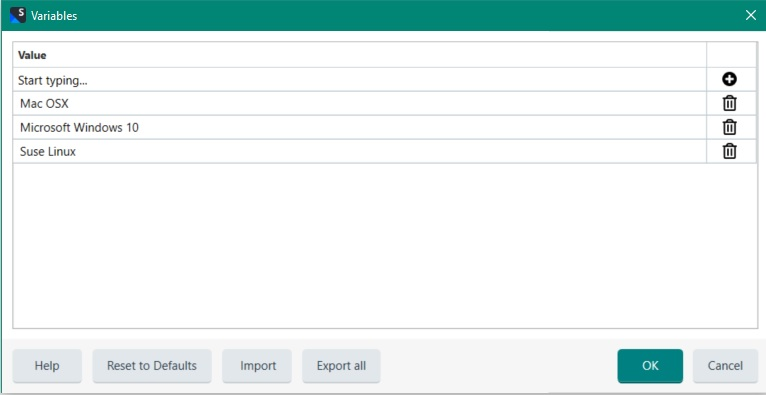

Adding Language Resources
In this chapter you will learn how to add languages resources such as custom abbreviations and variables to a translation memory. For more information on what language resources are, please see Configuring Translation Memories.
Add a New Class
Add a new class called TmLanguageResources to your project. Let us assume that you would like to add a number of variables and custom abbreviations to your TM. Remember that variables are used to mark up particular strings such as product names as placeables. With custom abbreviations you can prevent the system from interpreting the dot following an abbreviation as a full stop, and thus as a segment delimiter. A TM includes a list of common abbreviations for each language by default (for example U.S., ref., etc.). Below you see an example of the English abbreviations list that a TM includes by default:

This default list can be expanded with custom abbreviations to further fine-tune the segmentation. Note that there is no default variable list, i.e. the variable list for each TM that you create is empty by default.
Add a function called AddResource to your class, which takes the TM file name and path as string parameter. This function can be called as follows:
TMLanguageResource objResource = new TMLanguageResource();
objResource.AddResource(_translationMemoryFilePath);
Start by opening the TM to which the custom abbreviations and variables should be added:
FileBasedTranslationMemory tm = new FileBasedTranslationMemory(tmPath);
In the next step, create a default language resources object. For each language a default language resources bundle is provided, which contains, for example, the most common abbreviations for that language. For English, it contains abbreviations such as Mr., Mrs., Dr., etc. As mentioned before, the variables lists are always empty by default, as the variables are custom items such as product names.
DefaultLanguageResourceProvider defaultBundle = new DefaultLanguageResourceProvider();
Next, create a new language resources bundle object, which is added on top of the default bundle. That way, you leverage all the default resources, and add your own abbreviations, variables, etc. To do this apply the GetDefaultLanguageResources method to the default resources bundle object. This method takes the source language culture information as parameter, e.g. en-US.
LanguageResourceBundle newBundle = defaultBundle.GetDefaultLanguageResources(CultureInfo.GetCultureInfo("en-US"));
Note that the language resources bundle requires the source language information as parameter, as language resources always apply to the source segments:
FileBasedTranslationMemory tm = new FileBasedTranslationMemory(tmPath);
The bundle is the object that holds all possible language resource types, e.g. segmentation rules, variable lists, etc. Continue by creating a new Wordlist object, which is required for adding the individual abbreviation items as outlined below:
newBundle.Abbreviations = new Wordlist();
newBundle.Abbreviations.Add("hr.");
newBundle.Abbreviations.Add("cont.");
Note
Abbreviations are case-sensitive.
Last, create another Wordlist object to hold the variables, which are added to the bundle as demonstrated below. Finally add the language resource bundle to the TM, which you then save:
newBundle.Variables = new Wordlist();
newBundle.Variables.Add("Mac OSX");
newBundle.Variables.Add("Microsoft Windows 7");
newBundle.Variables.Add("Suse Linux");
tm.LanguageResourceBundles.Add(newBundle);
tm.Save();
When you open the TM in Trados Studio and view the language resources, the variable list will look as shown in the following screenshot:

Putting it All Together
The complete class should now look as shown below:
namespace SDK.LanguagePlatform.Samples.TmAutomation
{
using System.Globalization;
using Sdl.LanguagePlatform.Core;
using Sdl.LanguagePlatform.TranslationMemoryApi;
public class TMLanguageResource
{
public void AddResource(string tmPath)
{
#region "open"
FileBasedTranslationMemory tm = new FileBasedTranslationMemory(tmPath);
#endregion
#region "default"
DefaultLanguageResourceProvider defaultBundle = new DefaultLanguageResourceProvider();
#endregion
#region "newBundle"
LanguageResourceBundle newBundle = defaultBundle.GetDefaultLanguageResources(CultureInfo.GetCultureInfo("en-US"));
#endregion
#region "abbreviations"
newBundle.Abbreviations = new Wordlist();
newBundle.Abbreviations.Add("hr.");
newBundle.Abbreviations.Add("cont.");
#endregion
#region "variables"
newBundle.Variables = new Wordlist();
newBundle.Variables.Add("Mac OSX");
newBundle.Variables.Add("Microsoft Windows 7");
newBundle.Variables.Add("Suse Linux");
tm.LanguageResourceBundles.Add(newBundle);
tm.Save();
#endregion
}
}
}